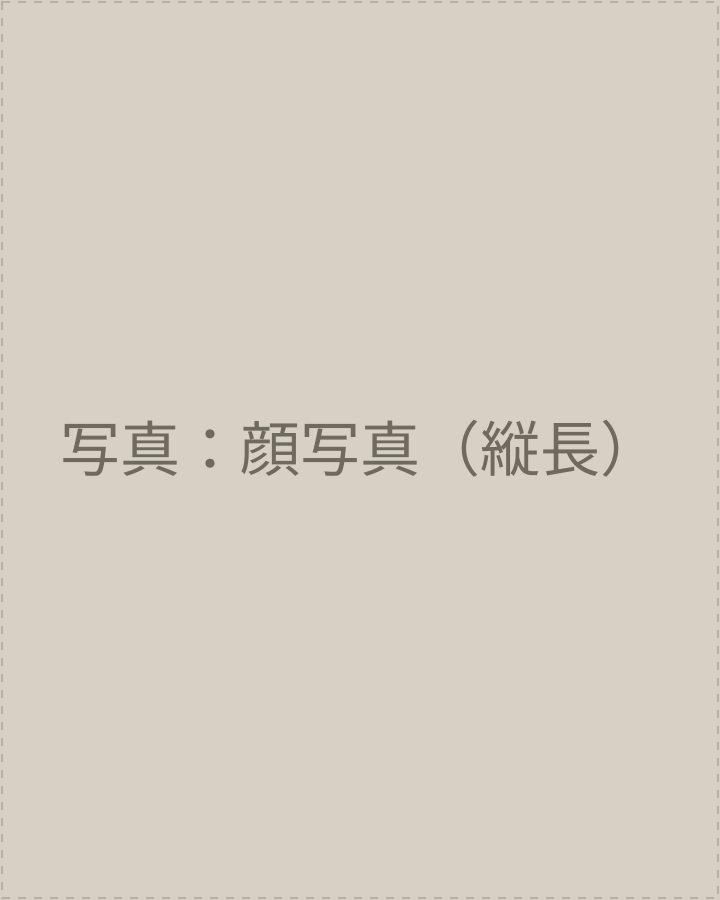
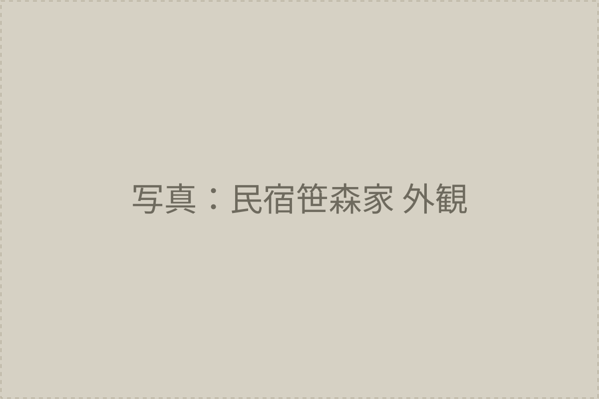
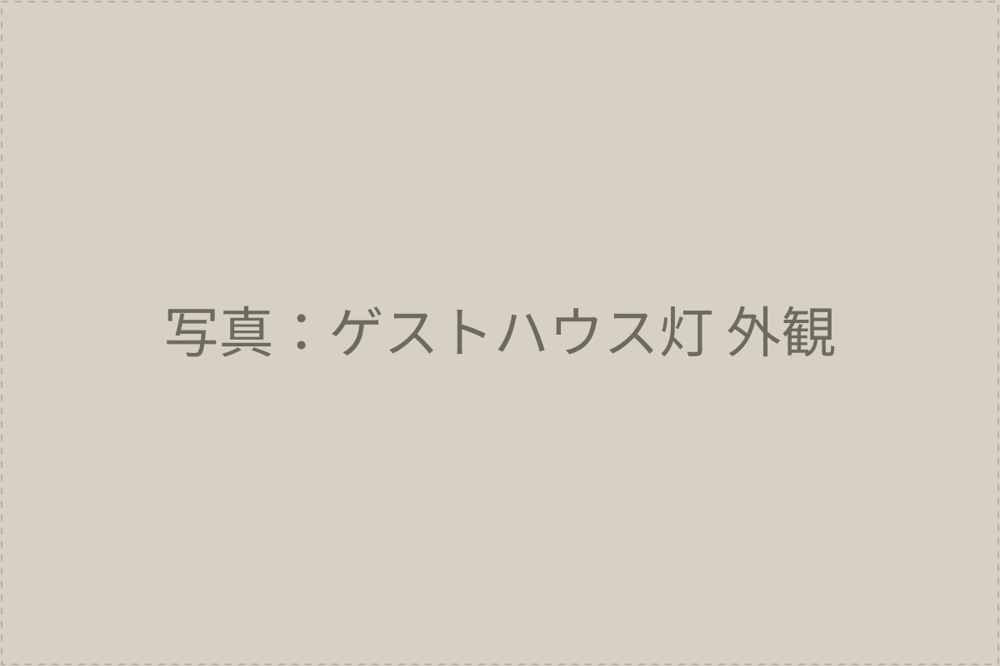

別荘をお持ちの、
その家を大切にしてこられた方へ。
はじめまして。
空いている別荘のことで、
お話させてください。
安曇野・穂高有明／三條 桜芽（さんじょう おうが）
突然のお便り、失礼いたします。
お家のポストに入っていたチラシを、こうして開いてくださったこと、ありがとうございます。
私は、長野県安曇野市穂高有明という、北アルプスの麓の静かな土地で、民宿笹森家とゲストハウス灯という小さな宿を2軒、お預かりしています。
お客様をお迎えして、お見送りして、間の掃除は、ぜんぶ私の手でしています。
このお便りを差し上げたのは、ひとつだけ、お願いしたいことがあったからです。
もし、ふだんはあまり使われていないお家があれば、私にお貸しいただけないでしょうか。お借りして、宿として、人の出入りのある家にしたいのです。家賃は、毎月、決まった額をお振込みします。
いきなりこんなお願いだけでは、怪しく思われても仕方がないと思います。
なので、少し長くなりますが、どうしてこんなお願いをしているのかを、わたくし自身のことからお話しさせてください。
わたくしのこと

株式会社Pack Vacation 代表
26歳／東京生まれ、東京育ち
包み隠さず書きます。
わたくしは、東京生まれ、東京育ち、低学歴、そして鬱病の経験者です。自分で「三重苦」と呼んでいます。
4年前、仕事に忙殺されていました。小さな会社で人間関係もうまくいかず、人に頼れない性格もあって、ぜんぶ自分の中で抱えていました。
一番しんどかった症状は、記憶が10秒もたないことでした。報告書を書こうとして写真を見る、「ん、この写真なんだっけ」。手元のメモに「今、報告書を書いている」と書いておかないと、本当に忘れてしまう。そういう状態でした。
当時の逃げ場は、会社の非常階段でした。
座って、携帯をいじって、時間が過ぎるのをただ待つ。泣きたくても、人の目があって泣けない。あれは発散ではなく、ただの一時停止でした。
鬱は治っていませんでした。それでも、同じ環境にいたら同じことを繰り返す、それだけはわかっていて、環境ごと変えようと決めました。24歳のときです。移住して1か月で宿を開業し、10か月後に法人をつくりました。今年で3年目、今は26歳になりました。
今の逃げ場は、川の岸です。水に足をつけて寝転がる。透き通った川が流れて、緑が視界いっぱいに広がって、川の音だけが聞こえる。しんどいときは、負の感情を全部そこに流します。泣きたいときは泣けるし、叫びたいときは叫べます。誰もいないからです。
鬱は、まだ付き合い続けている病気です。でも、逃げ場の質が、回復の質を決めると、今は思えるようになりました。
この話をお便りに書いたのは、わたくしがどういう人間かを、まずは正直にお伝えしておきたかったからです。きれいな経歴ではありません。けれど、安曇野にたどり着いて、宿をやって、人をお迎えすることで、わたくし自身が救われた側の人間です。だから、家のことを真剣に考えたいのです。
安曇野のこと、本当は、わたくしもよく知りませんでした
移住前に、友人からこう言われたことがあります。
「安曇野って、何もないでしょ」
わたくしの返事は、「いや、自然が……あるじゃん……」でした。
完敗でした。山の名前も知らない、川がどこから流れているのかも知らない。「ある」としか言えなかった自分が、情けなくて悔しくて、仕方ありませんでした。
その悔しさから、カメラを持って毎日外に出ることにしました。
いい、と思ったものにレンズを向ける。切り取って、残す。カメラは「なんとなく」を許してくれない道具で、光の向きや構図を考えるうちに、見える景色の解像度が、少しずつ上がっていきました。
一番驚いたのは、春でした。
灰色だった森に、まず白い花がぽつぽつと現れて、次に黄色が来る。遅れて緑が来る。春って、一気に来るものではなくて、順番があったのです。毎日外に出てはじめてわかりました。
これを2年続けました。朝、カーテンを開けたときの情報量が、以前とまったく違います。同じ晴れの日でも、昨日と今日は全然違う。雨の日でも、冬の雨と春の雨は別物です。
同じ景色なんて、一日もありません。これが、2年間毎日外に出て、ようやく体でわかったことでした。
「何もない」は、解像度が低い状態の感想だったと、今は思っています。
note「安曇野なんて何もないでしょに何も言い返せなかった。」より
なぜ、お家をお借りしたいのか
ここまで読んでくださって、ありがとうございます。
ようやく、お願いの中身に入ります。
宿を3年やってきて、思うことがあります。
家というのは、人が住まなくなった瞬間から、驚くほど早く傷みます。畳が湿気を吸い、水道が錆び、鳥や虫が屋根裏に入り、庭が草に埋もれます。年に数回ご利用になるだけでは、保つのが精一杯になりがちです。
いっぽうで、宿として人の出入りがあり、宿泊のたびに掃除と点検が入っているお家は、本当に長持ちします。使われている家は、元気です。
それと、もうひとつ。
先ほどの解像度の話とつながるのですが、ふだん使われていないお家には、オーナー様もまだご覧になっていない「安曇野の顔」が眠っていると思うのです。朝のたった30分の光の入り方、庭の片隅に出る山菜、雪の日のまわりの静けさ。毎日その家で過ごす人がいて、はじめて見つかるものがあります。
私は、そういう家に「もう一度、見つけてもらう時間」を作りたいのです。買い取って別の建物にするのではなく、お借りして、宿として息を吹き込ませていただく。オーナー様が「持っていてよかった」と思える道筋を、ひとつでも増やせないかと思っています。
ひとつだけ、宿でのお話をさせてください
こんなことがありました。
ご家族4人（ご夫婦と小6のお兄ちゃん、5歳の弟君）がお泊りくださった夕方、玄関先で少し暗い顔をされていたのです。「怒らせてしまったかな」と思いました。
でも、しばらくしてダイニングに出てきた5歳の弟君が、「これなに？」「あれなに？」と話しかけてくれて、お兄ちゃんも、お母さんも、少しずつ空気がやわらいでいきました。「お散歩したい」と弟君が言ったので、一緒に森の中を歩きました。懐中電灯がないと、1m先が見えない道です。空を見上げたら、雲の切れ間に星が見えて、お母さんが感動してくれました。
翌朝、お父さんが手を差し出してきて、「本当に来てよかった。ありがとうございます」と言ってくれました。
あとで知ったのは、チェックインのときに暗い顔をされていたのは、怒っていたのではなく、「ゲストハウスは初めてで、森の中で、大丈夫かな」と緊張されていたから、ということでした。
家を宿として開くというのは、こういう時間を生むことだと思っています。
使われていなかった建物の中で、はじめましての人と、散歩をして、星を見て、少し話す。それだけで、その家は、人の居場所としてもう一度、生き返ります。
もしかしたら、こんなお気持ちはありませんか
勝手な想像で恐縮ですが、別荘をお持ちの方から、こんなお声をうかがうことがあります。ひとつでも当てはまりましたら、どうぞ続きを読んでみてください。
- 年に数回しか使っていない。
- 子どもに残すか、迷っている。
- 管理料を払うだけになってしまっている。
- 売ってしまうのは、気が進まない。
- 傷んでいくのを見ているのが、心苦しい。
- できれば、大事に使う人に託したい。
お借りしたあと、わたくしがすること
もしご縁をいただけましたら、以下はすべて、私のほうで行います。
オーナー様に、新たにご負担いただく費用や作業はありません。
- 旅館業の許可を、当社の名義で取得します。
- 家具・寝具・備品類を、当社の費用でそろえます。
- ご予約の受付と、お客様とのやり取りは、当社で行います。
- 宿泊のたびに、掃除と簡単な点検をします。
- 近隣のご挨拶は、当社で順番にうかがいます。
- 毎月、決まった日に、家賃をお振込みします。
お家賃のこと
目安として、月に5万円から10万円の間でご提案することが多いです。
お家の広さ、建物と設備のご状態、立地や眺め、そしてオーナー様ご自身が年に何日ほどお使いになるか、そういったことで変わります。
数字だけを先に申し上げることは、しないようにしています。
まずはお家を、一度、拝見させてください。そのうえで、金額と、その根拠を、書面でご説明します。
空室の月があっても、家賃の額は変わりません。
これは、オーナー様に損をしていただかないための、わたくしなりの約束です。
お支払いは毎月の振込が基本ですが、年払いをご希望でしたら、ご相談に応じます。
いくつか、約束させてください
まずは1年から。
1年の契約から始めます。一度やってみて、合わなければ更新しなくて構いません。
ご自身でも、使えます。
オーナー様が使いたい日は、前もってお知らせいただければ、その日は宿として予約を取りません。年間の日数に応じて、家賃で調整します。
持ち主が変わっても、続きます。
契約は普通借家ですので、名義や持ち主が変わっても、そのまま続きます。
建物を大切に使います。
宿として使うことで出てしまう通常の消耗は、当社が直します。大きな修繕が必要なときは、必ず事前にご相談します。
※ ご希望に応じて、オーナー様が許可と設備をお持ちになって、運営だけを当社が担う形でも、ご相談できます。
ご心配なことに、お答えして
知らない人が泊まることが、どうしても不安です。
ご予約の受付、本人確認、滞在中のお願いごとの説明は、すべて当社でいたします。近隣のご挨拶やご連絡も、ぜんぶ当社の責任で行います。これまで3年、2軒を運営してきて、大きなお困りごとは起きていません。
家が傷まないか、心配です。
使われないお家の方が、早く傷んでしまいます。宿として使うお家は、宿泊のたびに掃除と点検が入りますので、何かあれば早くに気づけます。
固定資産税や、別荘地の管理費はどうなりますか。
所有者であるオーナー様のご負担のまま、これまで通りです。家賃は、それを上回る水準でご提案しています。
途中で売りたくなったら、どうなりますか。
ご相談ください。契約の期間に応じて、できる限り柔軟に対応します。
相続が起きたときは。
普通借家契約ですので、相続人の方との間で、そのまま続きます。事前にご家族にお伝えいただけると、より安心です。
自分たちも、夏にはやっぱり使いたい。
そのための日数を確保します。年間で何日お使いになりたいか、お話しください。日数に応じて家賃で調整します。
家具や、置きっぱなしのものがあります。
残すものと片づけるものを、一緒に決めさせてください。片づけは当社で承れます。
税金の扱いは。
お受け取りになる家賃は、不動産収入になります。詳しくは税理士の先生にご確認いただくのが確実です。必要でしたら、当社から税理士さん宛てに資料をご用意します。
これからの流れ
- 一、まずはお電話を。または、宿へご見学にお越しください。
- 二、ご都合のよい日に、お家を拝見しに伺います（所要1時間ほど）。
- 三、家賃の金額と条件を、書面でご提案します。
- 四、ご納得いただけましたら、ご契約（1年契約から）。
- 五、2〜3か月かけて、許可取得と家具の搬入を行います。
- 六、開業した月から、毎月決まった日に、お家賃をお振込みします。
お受けできるお家について
すべてのお家をお受けできるわけではなく、恐縮ながら条件があります。
広さは60㎡以上、場所は安曇野市とその周辺です。そして、お受けできるのは、あと3件までとしています。
お受けできなかった場合には、その理由をきちんとお伝えします。
お電話か、宿をご覧になりにお越しください
わたくしの宿は、2軒とも、安曇野市穂高有明にあります。歩いて行ける距離です。
事前にお電話いただければ、ご都合に合わせてご案内します。「ちょっとお話を聞いてみたいだけ」でも歓迎です。無理におすすめすることはありません。

森の中の一棟貸しのコテージ
ペット・子連れ歓迎／6名まで
Airbnb評価 ★4.84
Airbnbで見る →

温泉付きの古民家、登山の拠点に
ソロ・バックパッカー歓迎
Airbnb評価 ★4.9〜5.0
Airbnbで見る →